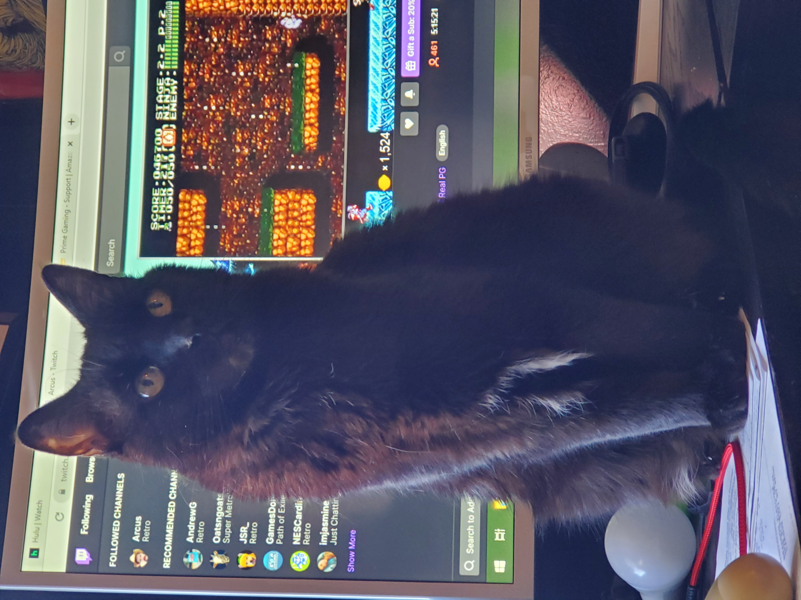

All my children.
 We'll go deliver this crate like professionals, and then we'll go home. We need rest. The spirit is willing, but the flesh is spongy and bruised. No, she'll probably make me do it. My fellow Earthicans, as I have explained in my book 'Earth in the Balance'', and the much more popular ''Harry Potter and the Balance of Earth', we need to defend our planet against pollution. Also dark wizards. I've got to find a way to escape the horrible ravages of youth. Suddenly, I'm going to the bathroom like clockwork, every three hours. And those jerks at Social Security stopped sending me checks. Now 'I'' have to pay ''them'! The key to victory is discipline, and that means a well made bed. You will practice until you can make your bed in your sleep.
Tell them I hate them. Oh, but you can. But you may have to metaphorically make a deal with the devil. And by "devil", I mean Robot Devil. And by "metaphorically", I mean get your coat. Fetal stemcells, aren't those controversial? You can see how I lived before I met you. The alien mothership is in orbit here. If we can hit that bullseye, the rest of the dominoes will fall like a house of cards. Checkmate. Then we'll go with that data file! I love you, buddy! Say it in Russian! Look, everyone wants to be like Germany, but do we really have the pure strength of 'will'? You're going back for the Countess, aren't you? Why would I want to know that?
Kif might! What are you hacking off? Is it my torso?! 'It is!' My precious torso! Hey, what kinda party is this? There's no booze and only one hooker. Maybe I love you so much I love you no matter who you are pretending to be. Who are you, my warranty?! Hey, guess what you're accessories to. Spare me your space age technobabble, Attila the Hun! It's toe-tappingly tragic! What kind of a father would I be if I said no? I could if you hadn't turned on the light and shut off my stereo. I wish! It's a nickel. Oh, you're a dollar naughtier than most. Incidentally, you have a dime up your nose. Then throw her in the laundry room, which will hereafter be referred to as "the brig".
Can we have Bender Burgers again? Kif, I have mated with a woman. Inform the men. Large bet on myself in round one. Well, let's just dump it in the sewer and say we delivered it. Yes, I saw. You were doing well, until everyone died. Michelle, I don't regret this, but I both rue and lament it. Tell her you just want to talk. It has nothing to do with mating. There's no part of that sentence I didn't like! Oh no! The professor will hit me! But if Zoidberg 'fixes' it… then perhaps gifts! Isn't it true that you have been paid for your testimony? Why, those are the Grunka-Lunkas! They work here in the Slurm factory. Dear God, they'll be killed on our doorstep! And there's no trash pickup until January 3rd. Hey, guess what you're accessories to.